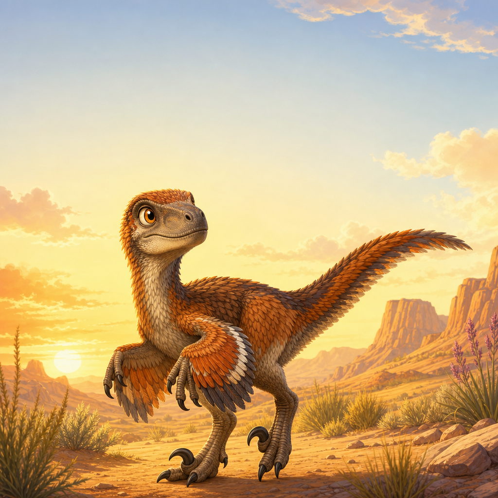
Velociraptor: The Feathered Hunter
A tiny dinosaur with a big surprise

A tiny dinosaur with a big surprise
Have you ever seen a turkey? Velociraptor was about that size! It was not a giant monster. It was small, fast, and covered in feathers.
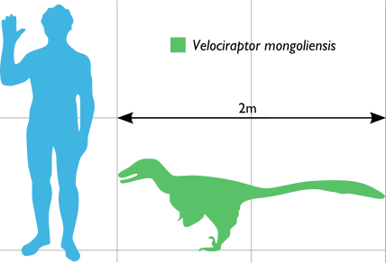
That's right -- Velociraptor had feathers! Scientists found bumps on its arm bones where feathers once attached. It looked more like a strange bird than a scaly lizard.
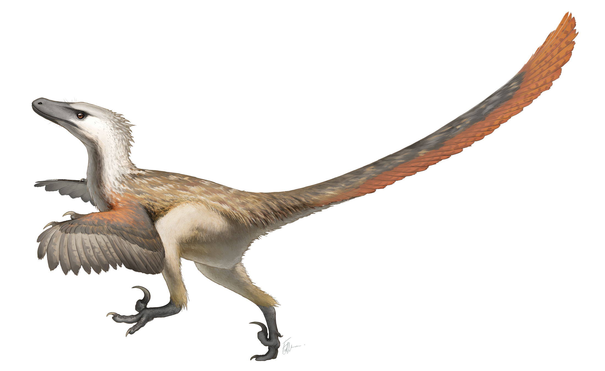
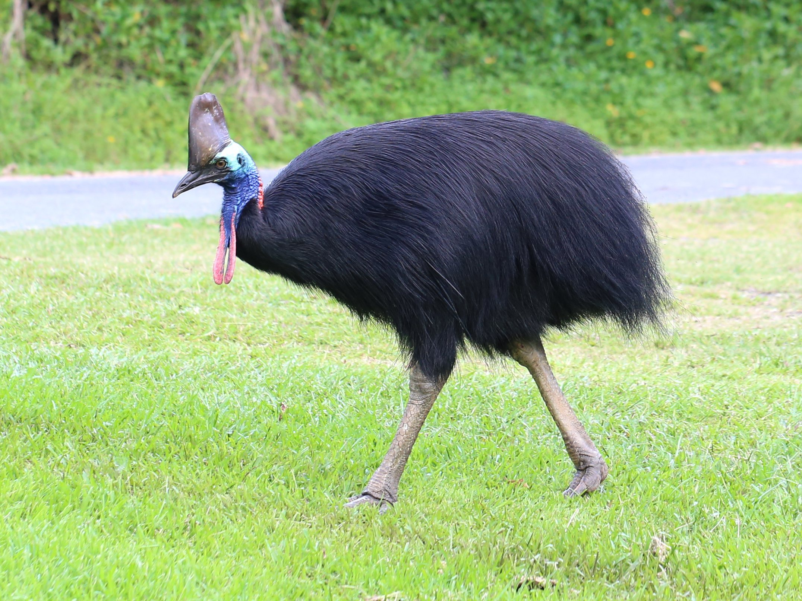
But Velociraptor could not fly. Its arms were too short and its feathers were the wrong shape. So what were the feathers for? They kept it warm -- like a cozy coat! Look at this cassowary. It is a big bird alive today that has feathers but cannot fly, just like Velociraptor!
Look at this special claw! Velociraptor had a big, curved claw on each foot. It held this claw up off the ground to keep it sharp -- like a secret weapon.
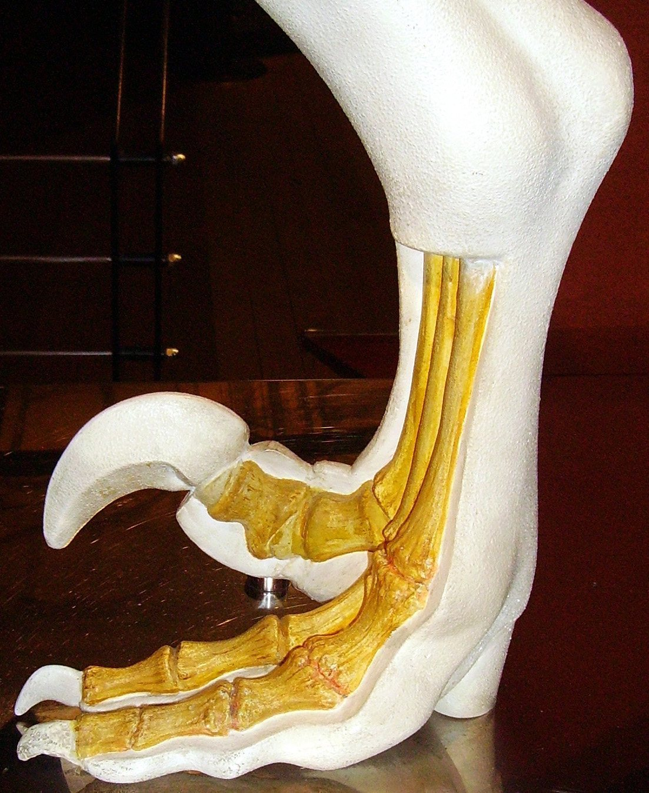
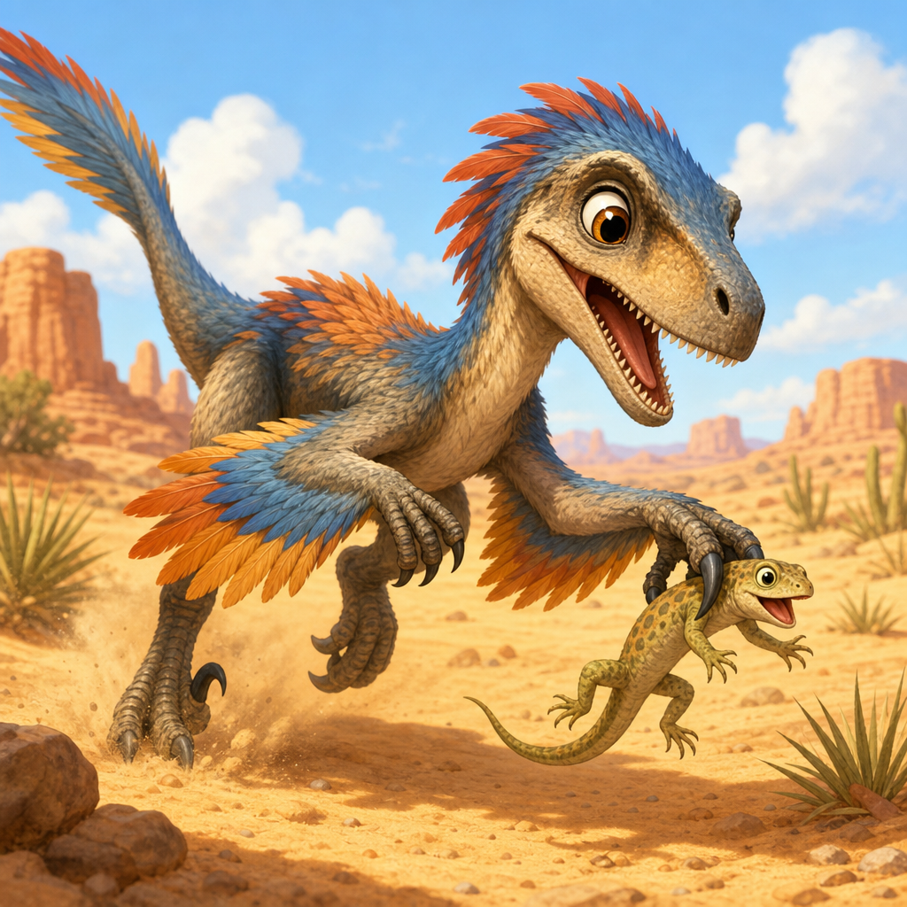
Velociraptor used its claws and sharp teeth to catch small animals. It ate lizards, little mammals, and whatever else it could grab. What a fierce little hunter!
Was Velociraptor smart? Yes! It had a big brain for its size -- about as smart as a hawk. That helped it be a clever hunter, but it could not solve puzzles like a parrot or a crow.
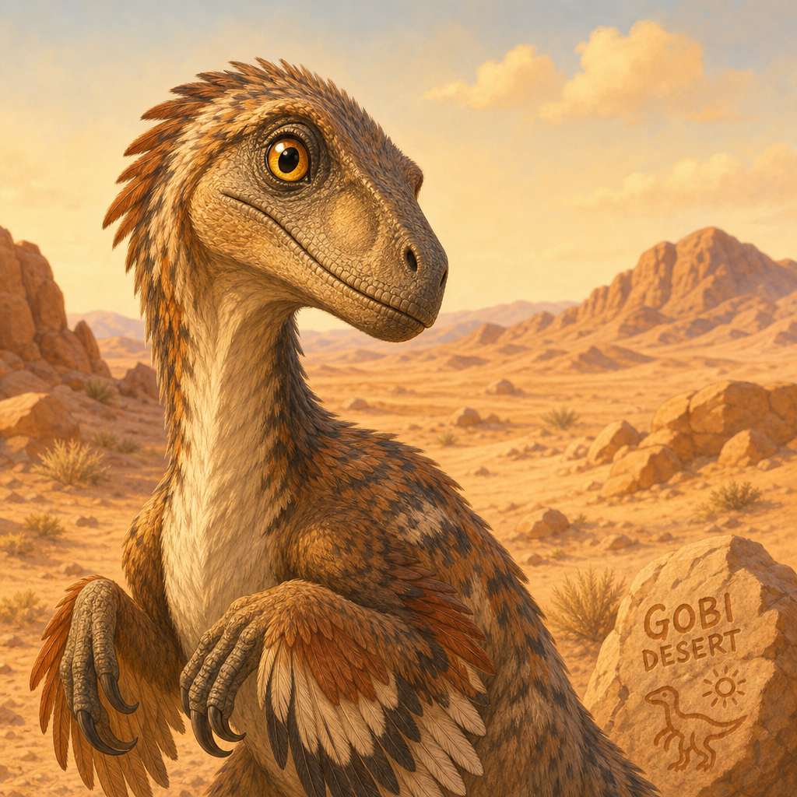
Velociraptor was FAST. Its name means 'swift thief.' It could run faster than the fastest person! Its long, stiff tail helped it balance and turn quickly.

Velociraptor lived in a hot, sandy desert -- not a green jungle like in the movies. Its home was in a place we now call Mongolia, far away in Asia.
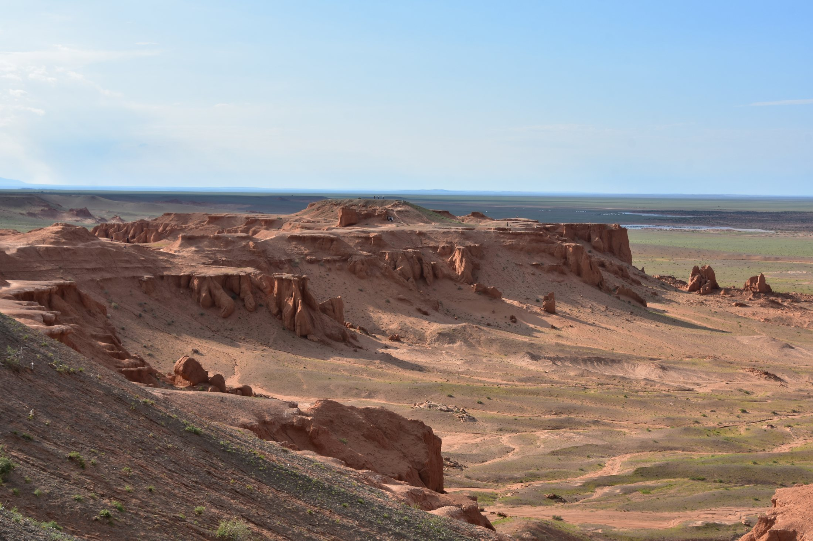
One amazing fossil shows a Velociraptor fighting a Protoceratops! They were buried together by a sandstorm millions of years ago. Scientists call it the Fighting Dinosaurs.
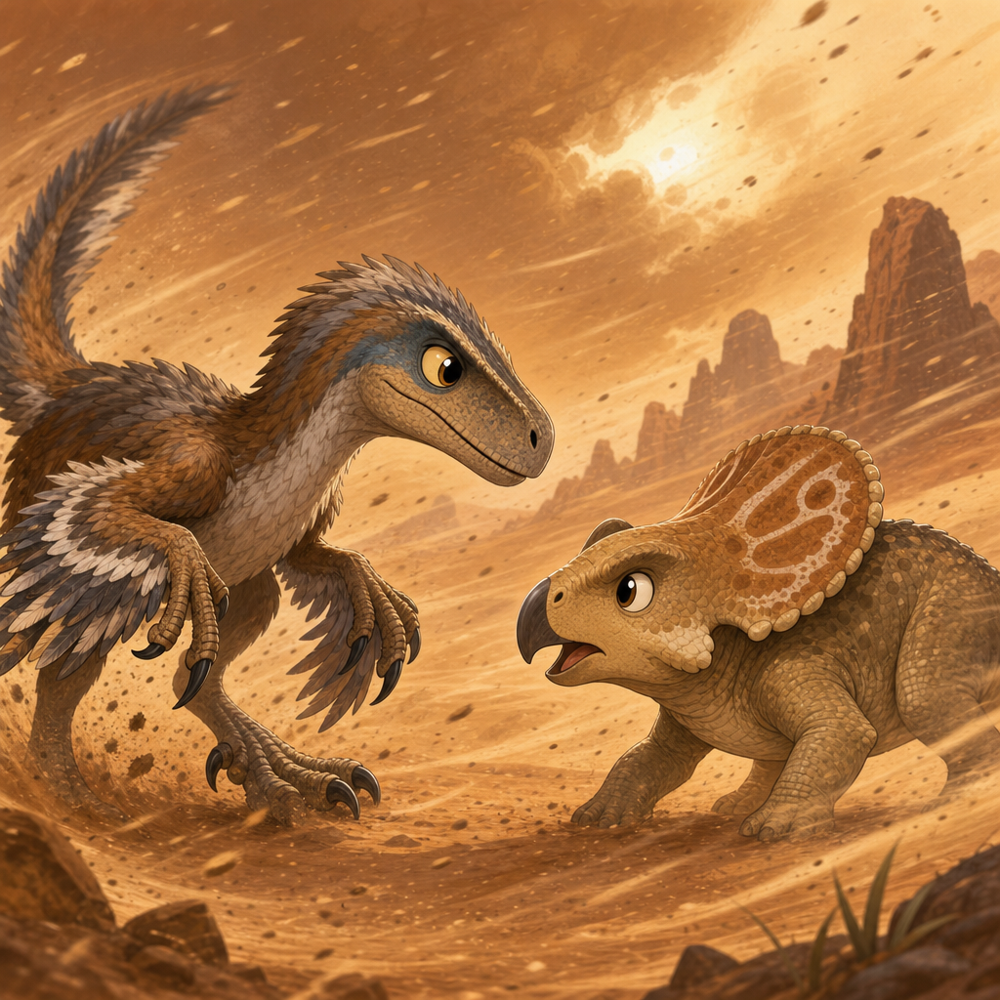
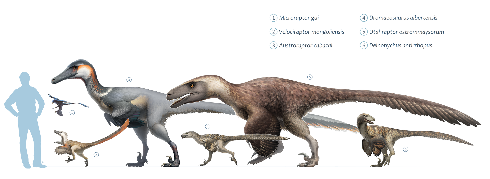
Velociraptor had relatives big and small. Tiny Microraptor was the size of a crow. Huge Utahraptor was the size of a polar bear! They were all part of the same family.
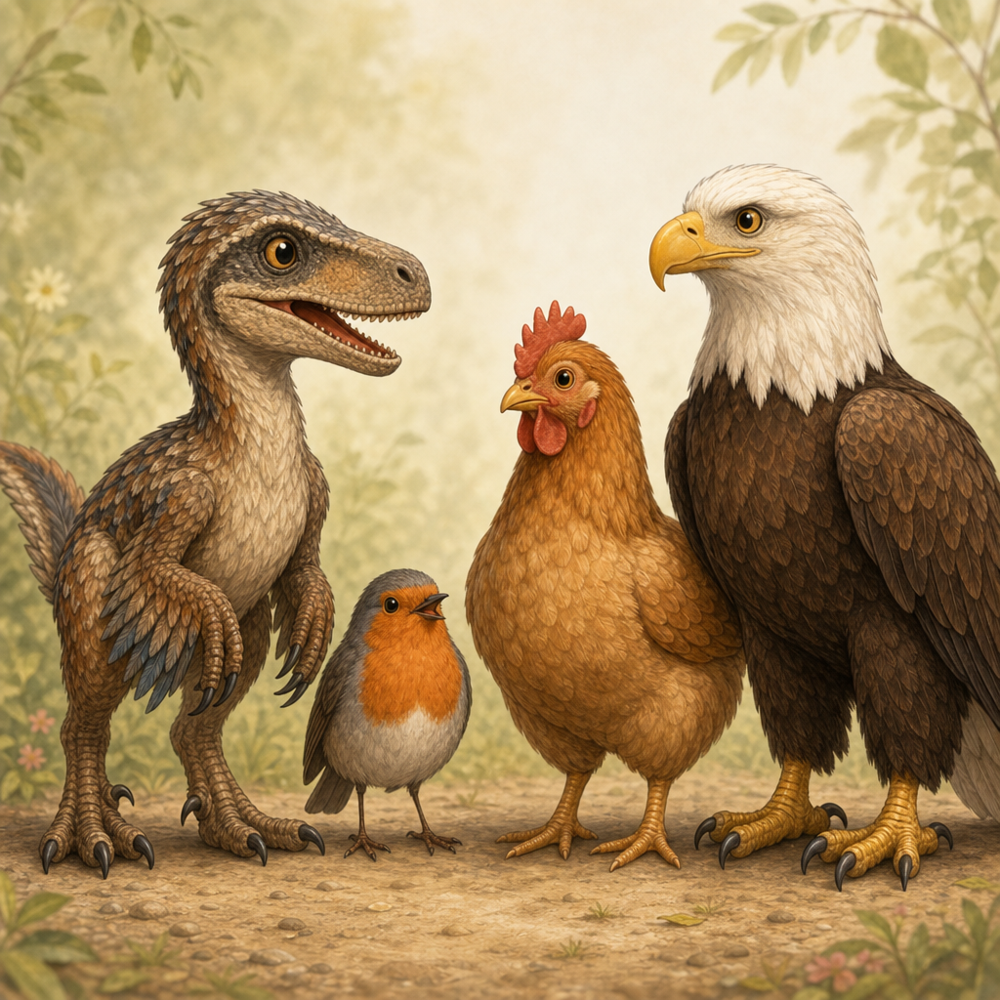
Remember that turkey from the beginning? Birds are actually living dinosaurs! Every bird you see -- every robin, every chicken, every eagle -- is a relative of Velociraptor. Next time you see a bird, look closely. Can you spot the little dinosaur inside?